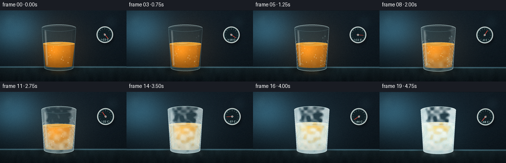
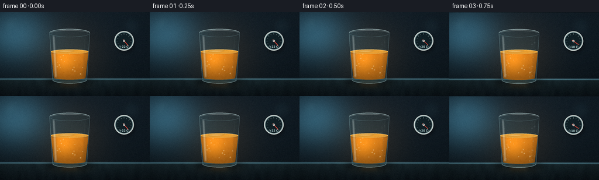
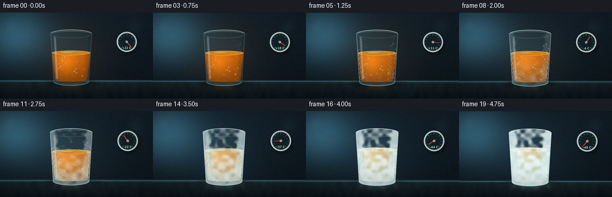
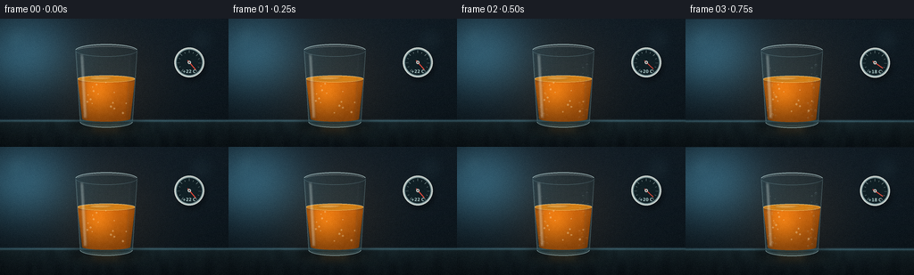

CODING AGENTS AS PIXEL WORLD MODELS
traex/DeepSeek-V4.1-Flash · phygen_094
点击播放 · 原生 RGB 像素
此结果可播放，但该运行尚未通过最终提交审核。页面展示不代表评测通过。
逐轮保存的候选
回放视频、检查图与代码变化。
每份候选均可单独播放。实际图片检查记录在下方工具轨迹中。
候选 01播放与检查图
点击播放 · 原生 RGB 像素


展开代码变化
--- 上一保存版本
+++ 本次保存版本
@@ -0,0 +1,667 @@
+from pathlib import Path
+import math
+
+import numpy as np
+from PIL import Image, ImageDraw, ImageFilter, ImageFont
+
+import artifact_io
+
+
+W, H = 256, 144
+FRAMES = 20
+FPS = 4
+S = 4
+CW, CH = W * S, H * S
+
+CASE_DIR = Path(__file__).resolve().parent
+
+# Scene geometry, in supersampled pixels.
+CX = 476
+GLASS_TOP = 142
+GLASS_BOTTOM = 462
+HALF_TOP = 139
+HALF_BOTTOM = 119
+TABLE_Y = 458
+OIL_TOP_LIQUID = 270
+OIL_TOP_SOLID = 252
+OIL_BOTTOM = 449
+
+
+def clamp(value, low=0.0, high=1.0):
+ return max(low, min(high, value))
+
+
+def smoothstep(edge0, edge1, value):
+ x = np.clip((value - edge0) / (edge1 - edge0), 0.0, 1.0)
+ return x * x * (3.0 - 2.0 * x)
+
+
+def mix(a, b, amount):
+ return a + (b - a) * amount
+
+
+def mix_color(a, b, amount):
+ return tuple(int(round(mix(x, y, amount))) for x, y in zip(a, b))
+
+
+def with_alpha(color, alpha):
+ return tuple(color[:3]) + (int(clamp(alpha, 0, 255)),)
+
+
+def rgba_array(rgb, alpha):
+ out = np.empty((CH, CW, 4), dtype=np.uint8)
+ out[..., :3] = np.clip(rgb, 0, 255).astype(np.uint8)
+ out[..., 3] = np.clip(alpha, 0, 255).astype(np.uint8)
+ return out
+
+
+def smooth_noise(seed, low_size, size=(CW, CH), blur=0):
+ rng = np.random.default_rng(seed)
+ low = rng.random((low_size[1], low_size[0])) * 255.0
+ image = Image.fromarray(low.astype(np.uint8)).resize(size, Image.Resampling.BICUBIC)
+ if blur:
+ image = image.filter(ImageFilter.GaussianBlur(blur))
+ return np.asarray(image, dtype=np.float32) / 255.0
+
+
+NOISE_CLOUD = smooth_noise(21, (30, 17), blur=5)
+NOISE_FROST = smooth_noise(83, (42, 24), blur=2)
+NOISE_FINE = smooth_noise(117, (96, 54), blur=0)
+NOISE_TABLE = smooth_noise(204, (50, 10), blur=1)
+
+
+def make_background(t, cold):
+ yy, xx = np.mgrid[0:CH, 0:CW].astype(np.float32)
+ v = yy / (CH - 1)
+
+ top = np.array((15, 28, 38), dtype=np.float32)
+ bottom = np.array((8, 17, 23), dtype=np.float32)
+ arr = top[None, None, :] * (1.0 - v[..., None]) + bottom[None, None, :] * v[..., None]
+
+ # A cool, diffused window light at the back left.
+ glow = np.exp(-(((xx - 92) / 235.0) ** 2 + ((yy - 148) / 195.0) ** 2))
+ arr += glow[..., None] * np.array((36, 72, 86), dtype=np.float32)
+
+ # The light behind the vessel changes from warm to icy over the timelapse.
+ back_light = mix_color((255, 148, 55), (105, 194, 218), smoothstep(0.15, 1.0, t))
+ halo = np.exp(-(((xx - CX) / 245.0) ** 2 + ((yy - 292) / 255.0) ** 2))
+ arr += halo[..., None] * np.array(back_light, dtype=np.float32) * 0.10
+
+ # Counter surface.
+ table = yy >= TABLE_Y
+ tv = np.clip((yy - TABLE_Y) / (CH - TABLE_Y), 0.0, 1.0)
+ table_top = np.array((19, 34, 39), dtype=np.float32)
+ table_bottom = np.array((7, 15, 20), dtype=np.float32)
+ table_color = table_top[None, None, :] * (1.0 - tv[..., None]) + table_bottom[None, None, :] * tv[..., None]
+ table_color += (NOISE_TABLE[..., None] - 0.5) * np.array((4, 6, 6), dtype=np.float32)
+ arr = np.where(table[..., None], table_color, arr)
+
+ # Soft horizon and reflected light on the counter.
+ horizon = np.exp(-((yy - TABLE_Y) / 5.0) ** 2)
+ arr += horizon[..., None] * np.array((52, 82, 91), dtype=np.float32)
+ reflection = np.exp(-(((xx - CX) / 118.0) ** 2 + ((yy - (TABLE_Y + 38)) / 35.0) ** 2))
+ reflection_color = np.array(mix_color((185, 117, 30), (111, 175, 185), cold), dtype=np.float32)
+ arr += reflection[..., None] * reflection_color * 0.10
+
+ bg = Image.fromarray(np.clip(arr, 0, 255).astype(np.uint8)).convert("RGBA")
+
+ # A few very soft background highlights create depth without stealing focus.
+ bokeh = Image.new("RGBA", (CW, CH), (0, 0, 0, 0))
+ bd = ImageDraw.Draw(bokeh, "RGBA")
+ bd.ellipse((22, 46, 116, 140), fill=(94, 157, 174, 18))
+ bd.ellipse((57, 25, 113, 81), fill=(171, 220, 226, 13))
+ bd.ellipse((842, 35, 960, 153), fill=(101, 169, 187, 14))
+ bd.rectangle((0, TABLE_Y + 42, CW, CH), fill=(2, 8, 11, 30))
+ bokeh = bokeh.filter(ImageFilter.GaussianBlur(22))
+ return Image.alpha_composite(bg, bokeh)
+
+
+def glass_half_width(y):
+ amount = clamp((y - GLASS_TOP) / (GLASS_BOTTOM - GLASS_TOP))
+ return mix(HALF_TOP, HALF_BOTTOM, amount)
+
+
+def body_mask():
+ mask = Image.new("L", (CW, CH), 0)
+ draw = ImageDraw.Draw(mask)
+ draw.polygon(
+ [
+ (CX - HALF_TOP, GLASS_TOP),
+ (CX + HALF_TOP, GLASS_TOP),
+ (CX + HALF_BOTTOM, GLASS_BOTTOM),
+ (CX - HALF_BOTTOM, GLASS_BOTTOM),
+ ],
+ fill=255,
+ )
+ draw.ellipse(
+ (CX - HALF_TOP, GLASS_TOP - 28, CX + HALF_TOP, GLASS_TOP + 28),
+ fill=255,
+ )
+ draw.ellipse(
+ (CX - HALF_BOTTOM, GLASS_BOTTOM - 27, CX + HALF_BOTTOM, GLASS_BOTTOM + 27),
+ fill=255,
+ )
+ return mask
+
+
+BODY_MASK = body_mask()
+
+
+def oil_geometry(solid):
+ oil_top = int(round(mix(OIL_TOP_LIQUID, OIL_TOP_SOLID, solid)))
+ inner_top = HALF_TOP - 11
+ inner_bottom = HALF_BOTTOM - 11
+ return oil_top, inner_top, inner_bottom
+
+
+def oil_mask(solid):
+ oil_top, inner_top, inner_bottom = oil_geometry(solid)
+ mask = Image.new("L", (CW, CH), 0)
+ draw = ImageDraw.Draw(mask)
+ draw.polygon(
+ [
+ (CX - inner_top, oil_top),
+ (CX + inner_top, oil_top),
+ (CX + inner_bottom, OIL_BOTTOM),
+ (CX - inner_bottom, OIL_BOTTOM),
+ ],
+ fill=255,
+ )
+ draw.ellipse(
+ (CX - inner_top, oil_top - 15, CX + inner_top, oil_top + 15),
+ fill=255,
+ )
+ draw.ellipse(
+ (CX - inner_bottom, OIL_BOTTOM - 13, CX + inner_bottom, OIL_BOTTOM + 13),
+ fill=255,
+ )
+ return mask, (oil_top, inner_top, inner_bottom)
+
+
+def draw_shadow_and_reflection(scene, t, cold):
+ layer = Image.new("RGBA", (CW, CH), (0, 0, 0, 0))
+ draw = ImageDraw.Draw(layer, "RGBA")
+ draw.ellipse((CX - 170, GLASS_BOTTOM - 17, CX + 170, GLASS_BOTTOM + 45), fill=(0, 4, 7, 112))
+ draw.ellipse((CX - 112, GLASS_BOTTOM - 8, CX + 112, GLASS_BOTTOM + 25), fill=(0, 3, 5, 82))
+ layer = layer.filter(ImageFilter.GaussianBlur(15))
+
+ reflection = Image.new("RGBA", (CW, CH), (0, 0, 0, 0))
+ rd = ImageDraw.Draw(reflection, "RGBA")
+ color = mix_color((185, 108, 26), (133, 178, 182), cold)
+ rd.polygon(
+ [
+ (CX - 88, TABLE_Y + 1),
+ (CX + 88, TABLE_Y + 1),
+ (CX + 54, TABLE_Y + 56),
+ (CX - 58, TABLE_Y + 56),
+ ],
+ fill=with_alpha(color, 34),
+ )
+ rd.ellipse((CX - 88, TABLE_Y - 10, CX + 88, TABLE_Y + 15), fill=with_alpha(color, 30))
+ reflection = reflection.filter(ImageFilter.GaussianBlur(13))
+ return Image.alpha_composite(Image.alpha_composite(scene, reflection), layer)
+
+
+def draw_thermometer(scene, t):
+ gx, gy, radius = 848, 196, 67
+ layer = Image.new("RGBA", (CW, CH), (0, 0, 0, 0))
+ draw = ImageDraw.Draw(layer, "RGBA")
+ draw.ellipse((gx - radius + 10, gy - radius + 17, gx + radius + 10, gy + radius + 17), fill=(0, 4, 8, 105))
+ layer = layer.filter(ImageFilter.GaussianBlur(9))
+
+ face = Image.new("RGBA", (CW, CH), (0, 0, 0, 0))
+ fd = ImageDraw.Draw(face, "RGBA")
+ fd.ellipse(
+ (gx - radius, gy - radius, gx + radius, gy + radius),
+ fill=(157, 178, 179, 255),
+ outline=(220, 229, 224, 255),
+ width=5,
+ )
+ fd.ellipse(
+ (gx - radius + 9, gy - radius + 9, gx + radius - 9, gy + radius - 9),
+ fill=(13, 29, 35, 255),
+ outline=(72, 103, 108, 255),
+ width=2,
+ )
+
+ for index in range(13):
+ angle = math.radians(140.0 - index * (280.0 / 12.0))
+ r0 = radius - 24
+ r1 = radius - (13 if index % 2 == 0 else 17)
+ p0 = (gx + math.sin(angle) * r0, gy - math.cos(angle) * r0)
+ p1 = (gx + math.sin(angle) * r1, gy - math.cos(angle) * r1)
+ fd.line((p0, p1), fill=(176, 202, 199, 185), width=2)
+
+ temperature = 22.0 - 70.0 * smoothstep(0.02, 0.98, t)
+ cold = clamp((22.0 - temperature) / 70.0)
+ needle_angle = math.radians(140.0 - 280.0 * cold)
+ needle_end = (gx + math.sin(needle_angle) * 43, gy - math.cos(needle_angle) * 43)
+ tail = (gx - math.sin(needle_angle) * 11, gy + math.cos(needle_angle) * 11)
+ fd.line((tail, needle_end), fill=(255, 77, 61, 255), width=4)
+ fd.ellipse((gx - 7, gy - 7, gx + 7, gy + 7), fill=(224, 232, 228, 255))
+ fd.ellipse((gx - 3, gy - 3, gx + 3, gy + 3), fill=(76, 43, 40, 255))
+
+ font = None
+ for font_path in (
+ "/usr/share/fonts/truetype/dejavu/DejaVuSansCondensed-Bold.ttf",
+ "/usr/share/fonts/truetype/liberation2/LiberationSans-Bold.ttf",
+ ):
+ if Path(font_path).is_file():
+ font = ImageFont.truetype(font_path, 20)
+ break
+ if font is None:
+ font = ImageFont.load_default()
+ label = f"{temperature:+.0f} C"
+ box = fd.textbbox((0, 0), label, font=font)
+ fd.text(
+ (gx - (box[2] - box[0]) / 2, gy + 29),
+ label,
+ font=font,
+ fill=(195, 229, 227, 235),
+ )
+ face = face.filter(ImageFilter.GaussianBlur(0.45))
+ return Image.alpha_composite(Image.alpha_composite(scene, layer), face)
+
+
+def draw_glass_back(scene, t, cold):
+ tint = np.zeros((CH, CW, 4), dtype=np.uint8)
+ yy, xx = np.mgrid[0:CH, 0:CW].astype(np.float32)
+ vertical = np.clip((yy - GLASS_TOP) / (GLASS_BOTTOM - GLASS_TOP), 0, 1)
+ tint_rgb = np.array((93, 151, 163), dtype=np.float32)[None, None, :]
+ tint_rgb = tint_rgb + (1.0 - vertical[..., None]) * np.array((24, 22, 15), dtype=np.float32)
+ tint[..., :3] = np.clip(tint_rgb, 0, 255).astype(np.uint8)
+ tint[..., 3] = np.clip(20 + 24 * vertical + 10 * cold, 0, 255).astype(np.uint8)
+ tint_image = Image.fromarray(tint)
+ tint_image.putalpha(Image.composite(tint_image.getchannel("A"), Image.new("L", (CW, CH), 0), BODY_MASK))
+ scene = Image.alpha_composite(scene, tint_image)
+
+ inner = Image.new("RGBA", (CW, CH), (0, 0, 0, 0))
+ draw = ImageDraw.Draw(inner, "RGBA")
+ draw.polygon(
+ [
+ (CX - HALF_TOP + 12, GLASS_TOP + 13),
+ (CX - HALF_TOP + 31, GLASS_TOP + 13),
+ (CX - HALF_BOTTOM + 31, GLASS_BOTTOM - 9),
+ (CX - HALF_BOTTOM + 12, GLASS_BOTTOM - 9),
+ ],
+ fill=(2, 14, 20, 28),
+ )
+ draw.polygon(
+ [
+ (CX + HALF_TOP - 18, GLASS_TOP + 13),
+ (CX + HALF_TOP - 8, GLASS_TOP + 13),
+ (CX + HALF_BOTTOM - 7, GLASS_BOTTOM - 9),
+ (CX + HALF_BOTTOM - 20, GLASS_BOTTOM - 9),
+ ],
+ fill=(3, 16, 22, 34),
+ )
+ inner = inner.filter(ImageFilter.GaussianBlur(6))
+ inner.putalpha(Image.composite(inner.getchannel("A"), Image.new("L", (CW, CH), 0), BODY_MASK))
+ return Image.alpha_composite(scene, inner)
+
+
+def draw_oil(scene, t, cold, solid, cloud):
+ mask, (oil_top, inner_top, inner_bottom) = oil_mask(solid)
+ yy, xx = np.mgrid[0:CH, 0:CW].astype(np.float32)
+
+ yn = np.clip((yy - oil_top) / (OIL_BOTTOM - oil_top), 0.0, 1.0)
+ initial = np.array((196, 111, 19), dtype=np.float32)
+ final = np.array((226, 192, 105), dtype=np.float32)
+ base = initial[None, None, :] * (1.0 - solid) + final[None, None, :] * solid
+ base = base * (1.12 - yn[..., None] * 0.35)
+
+ warm_glow = np.exp(-(((xx - (CX - 38)) / 82.0) ** 2 + ((yy - (oil_top + 64)) / 92.0) ** 2))
+ base += warm_glow[..., None] * np.array((58, 37, 7), dtype=np.float32) * (1.0 - 0.45 * solid)
+
+ edge = np.abs(xx - CX) / np.maximum(1.0, np.interp(yy, [GLASS_TOP, GLASS_BOTTOM], [HALF_TOP, HALF_BOTTOM]))
+ base *= (1.0 - 0.20 * smoothstep(0.62, 1.0, edge))[..., None]
+
+ cloud_texture = np.clip((NOISE_CLOUD - 0.34) * 1.65, 0, 1)
+ cloud_shape = smoothstep(0.15, 0.92, yn) * (0.25 + 0.75 * cloud_texture)
+ cloud_amount = cloud * (0.18 + 0.60 * cloud_shape)
+ cloudy_color = np.array((246, 222, 160), dtype=np.float32)
+ base = base * (1.0 - cloud_amount[..., None]) + cloudy_color * cloud_amount[..., None]
+ base += (NOISE_FINE[..., None] - 0.5) * (3.5 + 5.0 * solid)
+
+ alpha = np.full((CH, CW), 247.0, dtype=np.float32)
+ alpha *= smoothstep(0.0, 0.12, yn) * 0.30 + 0.70
+ oil_rgba = rgba_array(base, alpha)
+ oil = Image.fromarray(oil_rgba)
+ oil.putalpha(Image.composite(oil.getchannel("A"), Image.new("L", (CW, CH), 0), mask))
+ scene = Image.alpha_composite(scene, oil)
+
+ # Crystal needles grow from the cold base and sides into the oil.
+ crystal = smoothstep(0.38, 1.0, t)
+ if crystal > 0.01:
+ crystal_layer = Image.new("RGBA", (CW, CH), (0, 0, 0, 0))
+ draw = ImageDraw.Draw(crystal_layer, "RGBA")
+ rng = np.random.default_rng(514)
+ for stem_index in range(11):
+ side = -1 if stem_index % 2 == 0 else 1
+ start_x = CX + side * rng.uniform(25, inner_bottom - 16)
+ start_y = OIL_BOTTOM - rng.uniform(5, 28)
+ angle = -math.pi / 2 + side * rng.uniform(0.06, 0.38)
+ length = (44 + rng.uniform(0, 62)) * crystal
+ width = 2 if stem_index % 3 else 3
+ color = (217, 239, 229, int(75 + 65 * crystal))
+ x, y = start_x, start_y
+ segments = 5
+ for segment in range(segments):
+ step = length / segments
+ angle += rng.uniform(-0.16, 0.16)
+ nx = x + math.cos(angle) * step
+ ny = y + math.sin(angle) * step
+ draw.line((x, y, nx, ny), fill=color, width=width)
+ if segment >= 1 and segment <= 3:
+ branch_length = step * rng.uniform(0.55, 1.0)
+ branch_angle = angle + side * rng.uniform(0.45, 0.90)
+ bx = nx + math.cos(branch_angle) * branch_length
+ by = ny + math.sin(branch_angle) * branch_length
+ draw.line((nx, ny, bx, by), fill=(222, 244, 234, int(55 + 50 * crystal)), width=2)
+ x, y = nx, ny
+ crystal_layer = crystal_layer.filter(ImageFilter.GaussianBlur(0.55))
+ crystal_layer.putalpha(
+ Image.composite(crystal_layer.getchannel("A"), Image.new("L", (CW, CH), 0), mask)
+ )
+ scene = Image.alpha_composite(scene, crystal_layer)
+
+ # Small bubbles slow down and are finally trapped in the solid.
+ bubbles = Image.new("RGBA", (CW, CH), (0, 0, 0, 0))
+ bd = ImageDraw.Draw(bubbles, "RGBA")
+ bubble_rng = np.random.default_rng(88)
+ for index in range(15):
+ bx = CX + bubble_rng.uniform(-inner_bottom + 12, inner_bottom - 12)
+ phase = bubble_rng.uniform(0, 1)
+ by = OIL_BOTTOM - 24 - ((phase + t * (0.55 - 0.40 * solid)) % 1.0) * max(30, OIL_BOTTOM - oil_top - 38)
+ radius = bubble_rng.uniform(2.0, 4.8) * (1.0 - 0.25 * solid)
+ alpha = int(42 + 54 * (1.0 - solid))
+ bd.ellipse((bx - radius, by - radius, bx + radius, by + radius), fill=(244, 222, 172, alpha))
+ bd.arc((bx - radius, by - radius, bx + radius, by + radius), 205, 340, fill=(255, 250, 224, alpha), width=1)
+ bubbles.putalpha(Image.composite(bubbles.getchannel("A"), Image.new("L", (CW, CH), 0), mask))
+ return Image.alpha_composite(scene, bubbles)
+
+
+def draw_surface(scene, t, cold, solid, cloud):
+ oil_top, inner_top, _ = oil_geometry(solid)
+ bbox = (CX - inner_top, oil_top - 15, CX + inner_top, oil_top + 15)
+ surface_mask = Image.new("L", (CW, CH), 0)
+ ImageDraw.Draw(surface_mask).ellipse(bbox, fill=255)
+
+ surface = Image.new("RGBA", (CW, CH), (0, 0, 0, 0))
+ draw = ImageDraw.Draw(surface, "RGBA")
+ surface_color = mix_color((231, 157, 48), (241, 217, 156), solid)
+ draw.ellipse(bbox, fill=with_alpha(surface_color, 244))
+ draw.ellipse(bbox, outline=with_alpha(mix_color((255, 213, 116), (230, 247, 231), solid), 185), width=2)
+
+ # Liquid sheen becomes a cracked, faceted crystalline cap.
+ if solid < 0.55:
+ sheen = Image.new("RGBA", (CW, CH), (0, 0, 0, 0))
+ sd = ImageDraw.Draw(sheen, "RGBA")
+ sd.ellipse((CX - 77, oil_top - 10, CX + 19, oil_top + 3), fill=(255, 243, 183, 78))
+ sd.ellipse((CX - 37, oil_top - 9, CX + 32, oil_top - 2), fill=(255, 253, 228, 60))
+ sheen = sheen.filter(ImageFilter.GaussianBlur(3.0))
+ sheen.putalpha(Image.composite(sheen.getchannel("A"), Image.new("L", (CW, CH), 0), surface_mask))
+ surface = Image.alpha_composite(surface, sheen)
+
+ if solid > 0.24:
+ facet_alpha = int(210 * smoothstep(0.24, 0.88, solid))
+ rng = np.random.default_rng(440)
+ angles = np.linspace(0, math.tau, 12, endpoint=False) + rng.uniform(-0.07, 0.07, 12)
+ center = (CX + 2, oil_top + 1)
+ for index, angle in enumerate(angles):
+ next_angle = angles[(index + 1) % len(angles)]
+ radius_x = inner_top * rng.uniform(0.84, 1.0)
+ radius_y = 13.0 * rng.uniform(0.84, 1.0)
+ p1 = (CX + math.cos(angle) * radius_x, oil_top + math.sin(angle) * radius_y)
+ p2 = (CX + math.cos(next_angle) * radius_x, oil_top + math.sin(next_angle) * radius_y)
+ shade = int(round(18 * rng.uniform(-1, 1)))
+ color = (
+ clamp(232 + shade, 0, 255),
+ clamp(213 + shade, 0, 255),
+ clamp(154 + shade, 0, 255),
+ )
+ draw.polygon((center, p1, p2), fill=with_alpha(color, facet_alpha))
+ draw.line((p1, p2), fill=(255, 249, 220, int(facet_alpha * 0.58)), width=1)
+ draw.line((CX - 83, oil_top - 4, CX + 68, oil_top + 8), fill=(83, 61, 35, int(90 * solid)), width=2)
+ draw.line((CX - 54, oil_top + 11, CX + 48, oil_top - 7), fill=(91, 68, 38, int(74 * solid)), width=1)
+
+ surface.putalpha(Image.composite(surface.getchannel("A"), Image.new("L", (CW, CH), 0), surface_mask))
+ scene = Image.alpha_composite(scene, surface)
+
+ rim = Image.new("RGBA", (CW, CH), (0, 0, 0, 0))
+ rd = ImageDraw.Draw(rim, "RGBA")
+ rd.arc(bbox, 186, 355, fill=(255, 238, 181, 150), width=2)
+ rd.arc((bbox[0] + 4, bbox[1] + 3, bbox[2] - 4, bbox[3] - 3), 8, 174, fill=(129, 80, 22, 125), width=1)
+ return Image.alpha_composite(scene, rim)
+
+
+def draw_glass_front(scene, t, cold):
+ glint = Image.new("RGBA", (CW, CH), (0, 0, 0, 0))
+ draw = ImageDraw.Draw(glint, "RGBA")
+ draw.polygon(
+ [
+ (CX - 119, GLASS_TOP + 14),
+ (CX - 101, GLASS_TOP + 16),
+ (CX - 85, GLASS_BOTTOM - 14),
+ (CX - 103, GLASS_BOTTOM - 14),
+ ],
+ fill=(228, 248, 245, 44),
+ )
+ draw.line((CX - 111, GLASS_TOP + 24, CX - 96, GLASS_BOTTOM - 20), fill=(244, 255, 250, 98), width=5)
+ draw.line((CX - 105, GLASS_TOP + 30, CX - 92, GLASS_BOTTOM - 30), fill=(255, 255, 248, 80), width=2)
+ draw.line((CX + 106, GLASS_TOP + 20, CX + 94, GLASS_BOTTOM - 20), fill=(210, 244, 244, 62), width=3)
+ glint = glint.filter(ImageFilter.GaussianBlur(3.2))
+ glint.putalpha(Image.composite(glint.getchannel("A"), Image.new("L", (CW, CH), 0), BODY_MASK))
+ scene = Image.alpha_composite(scene, glint)
+
+ outline = Image.new("RGBA", (CW, CH), (0, 0, 0, 0))
+ draw = ImageDraw.Draw(outline, "RGBA")
+ rim_bbox = (CX - HALF_TOP, GLASS_TOP - 28, CX + HALF_TOP, GLASS_TOP + 28)
+ draw.arc(rim_bbox, 188, 352, fill=(214, 243, 242, 168), width=4)
+ draw.arc(rim_bbox, 4, 176, fill=(139, 186, 193, 96), width=2)
+ draw.arc(
+ (CX - HALF_TOP + 8, GLASS_TOP - 18, CX + HALF_TOP - 8, GLASS_TOP + 18),
+ 188,
+ 352,
+ fill=(247, 255, 250, 110),
+ width=2,
+ )
+ draw.line(
+ (CX - HALF_TOP + 2, GLASS_TOP + 8, CX - HALF_BOTTOM + 2, GLASS_BOTTOM - 6),
+ fill=(190, 232, 234, 90),
+ width=2,
+ )
+ draw.line(
+ (CX + HALF_TOP - 2, GLASS_TOP + 8, CX + HALF_BOTTOM - 2, GLASS_BOTTOM - 6),
+ fill=(173, 218, 223, 80),
+ width=2,
+ )
+ draw.arc(
+ (CX - HALF_BOTTOM, GLASS_BOTTOM - 27, CX + HALF_BOTTOM, GLASS_BOTTOM + 27),
+ 5,
+ 175,
+ fill=(205, 240, 240, 120),
+ width=4,
+ )
+ draw.arc(
+ (CX - HALF_BOTTOM + 8, GLASS_BOTTOM - 17, CX + HALF_BOTTOM - 8, GLASS_BOTTOM + 17),
+ 5,
+ 175,
+ fill=(119, 165, 173, 95),
+ width=2,
+ )
+ return Image.alpha_composite(scene, outline)
+
+
+def draw_frost(scene, t, cold):
+ frost = smoothstep(0.19, 1.0, t)
+ if frost <= 0.002:
+ return scene
+
+ yy, xx = np.mgrid[0:CH, 0:CW].astype(np.float32)
+ half = np.interp(yy, [GLASS_TOP, GLASS_BOTTOM], [HALF_TOP, HALF_BOTTOM])
+ edge = np.abs(xx - CX) / np.maximum(half, 1.0)
+ vertical = np.clip((yy - (GLASS_TOP + 72)) / (GLASS_BOTTOM - GLASS_TOP - 55), 0, 1)
+ edge_factor = smoothstep(0.48, 0.98, edge)
+ bottom_factor = smoothstep(0.08, 0.94, vertical)
+ texture = NOISE_FROST
+ amount = (
+ 0.74 * edge_factor
+ + 0.46 * bottom_factor
+ + 0.48 * (texture - 0.40)
+ + 0.43 * frost
+ - 0.34
+ )
+ amount = np.clip(amount * 2.5, 0, 1) * frost
+ body = np.asarray(BODY_MASK, dtype=np.float32) / 255.0
+ amount *= body
+
+ rgb = np.zeros((CH, CW, 3), dtype=np.float32)
+ rgb[..., 0] = 204 + 34 * texture
+ rgb[..., 1] = 231 + 17 * texture
+ rgb[..., 2] = 234 + 14 * texture
+ alpha = amount * (145 + 78 * cold)
+ frost_layer = Image.fromarray(rgba_array(rgb, alpha), "RGBA")
+
+ # A crisp frosted silhouette keeps the glass readable at low resolution.
+ eroded = BODY_MASK.filter(ImageFilter.MinFilter(5))
+ edge_mask = Image.fromarray(
+ np.clip(np.asarray(BODY_MASK, dtype=np.int16) - np.asarray(eroded, dtype=np.int16), 0, 255).astype(np.uint8),
+ "L",
+ )
+ edge_alpha = edge_mask.point(lambda p: int(p * (0.44 + 0.36 * frost)))
+ edge_layer = Image.new("RGBA", (CW, CH), (219, 246, 244, 255))
+ edge_layer.putalpha(edge_alpha)
+ scene = Image.alpha_composite(scene, edge_layer)
+ scene = Image.alpha_composite(scene, frost_layer)
+
+ # Frost ferns climb inward from both sides and the base.
+ ferns = Image.new("RGBA", (CW, CH), (0, 0, 0, 0))
+ draw = ImageDraw.Draw(ferns, "RGBA")
+ rng = np.random.default_rng(709)
+ for side in (-1, 1):
+ for index in range(7):
+ start_y = GLASS_BOTTOM - 16 - index * 31 - rng.uniform(0, 11)
+ start_x = CX + side * (glass_half_width(start_y) - 3)
+ angle = -math.pi / 2 - side * rng.uniform(0.18, 0.58)
+ length = (18 + 24 * frost) * rng.uniform(0.72, 1.18)
+ x, y = start_x, start_y
+ for segment in range(4):
+ step = length / 4
+ angle += rng.uniform(-0.18, 0.18)
+ nx = x + math.cos(angle) * step
+ ny = y + math.sin(angle) * step
+ draw.line((x, y, nx, ny), fill=(232, 252, 248, int(118 + 65 * frost)), width=2)
+ if segment in (1, 2):
+ ba = angle - side * rng.uniform(0.55, 0.95)
+ bl = step * rng.uniform(0.55, 0.90)
+ draw.line(
+ (nx, ny, nx + math.cos(ba) * bl, ny + math.sin(ba) * bl),
+ fill=(235, 253, 249, int(88 + 55 * frost)),
+ width=1,
+ )
+ x, y = nx, ny
+ ferns.putalpha(Image.composite(ferns.getchannel("A"), Image.new("L", (CW, CH), 0), BODY_MASK))
+ return Image.alpha_composite(scene, ferns)
+
+
+def draw_condensation(scene, t, cold):
+ dew = smoothstep(0.04, 0.42, t) * (1.0 - 0.42 * smoothstep(0.62, 1.0, t))
+ if dew <= 0.01:
+ return scene
+ layer = Image.new("RGBA", (CW, CH), (0, 0, 0, 0))
+ draw = ImageDraw.Draw(layer, "RGBA")
+ rng = np.random.default_rng(330)
+ for index in range(34):
+ y = rng.uniform(GLASS_TOP + 65, GLASS_BOTTOM - 12)
+ side = -1 if index % 2 == 0 else 1
+ hw = glass_half_width(y)
+ x = CX + side * rng.uniform(hw * 0.56, hw * 0.94)
+ radius = rng.uniform(2.2, 5.1)
+ alpha = int((42 + rng.uniform(0, 55)) * dew)
+ draw.ellipse((x - radius, y - radius, x + radius, y + radius), fill=(160, 209, 211, alpha))
+ draw.arc(
+ (x - radius, y - radius, x + radius, y + radius),
+ 195,
+ 330,
+ fill=(239, 255, 250, min(230, alpha + 70)),
+ width=1,
+ )
+ layer.putalpha(Image.composite(layer.getchannel("A"), Image.new("L", (CW, CH), 0), BODY_MASK))
+ return Image.alpha_composite(scene, layer)
+
+
+def draw_cold_vapor(scene, t, cold):
+ vapor = smoothstep(0.32, 1.0, t)
+ if vapor <= 0.01:
+ return scene
+ layer = Image.new("RGBA", (CW, CH), (0, 0, 0, 0))
+ draw = ImageDraw.Draw(layer, "RGBA")
+ for band in range(4):
+ points = []
+ for step in range(17):
+ u = step / 16
+ y = GLASS_BOTTOM - 42 + u * 96
+ base_x = CX - 110 + band * 73
+ x = base_x + math.sin(u * math.tau * 1.35 + band * 1.7 + t * 2.5) * 13
+ x += (u - 0.5) * (band - 1.5) * 8
+ points.append((x, y))
+ draw.line(points, fill=(184, 224, 231, int(20 + 18 * vapor)), width=8, joint="curve")
+ pool = Image.new("RGBA", (CW, CH), (0, 0, 0, 0))
+ pd = ImageDraw.Draw(pool, "RGBA")
+ pd.ellipse((CX - 172, GLASS_BOTTOM - 16, CX + 172, GLASS_BOTTOM + 45), fill=(182, 224, 230, int(42 * vapor)))
+ layer = Image.alpha_composite(layer, pool.filter(ImageFilter.GaussianBlur(18)))
+ layer = layer.filter(ImageFilter.GaussianBlur(8))
+ return Image.alpha_composite(scene, layer)
+
+
+def render_frame(index):
+ t = index / (FRAMES - 1)
+ cold = smoothstep(0.015, 0.985, t)
+ solid = smoothstep(0.50, 0.96, t)
+ cloud = smoothstep(0.13, 0.84, t)
+
+ scene = make_background(t, cold)
+ scene = draw_shadow_and_reflection(scene, t, cold)
+ scene = draw_thermometer(scene, t)
+ scene = draw_glass_back(scene, t, cold)
+ scene = draw_oil(scene, t, cold, solid, cloud)
+ scene = draw_surface(scene, t, cold, solid, cloud)
+ scene = draw_glass_front(scene, t, cold)
+ scene = draw_frost(scene, t, cold)
+ scene = draw_condensation(scene, t, cold)
+ scene = draw_cold_vapor(scene, t, cold)
+
+ # A restrained push-in gives the five-second timelapse a sense of observation.
+ zoom = 1.0 + 0.027 * smoothstep(0.0, 1.0, t)
+ zoom_w, zoom_h = int(CW * zoom), int(CH * zoom)
+ zoomed = scene.resize((zoom_w, zoom_h), Image.Resampling.LANCZOS)
+ left = (zoom_w - CW) // 2
+ top = (zoom_h - CH) // 2 - int(2 * S * t)
+ scene = zoomed.crop((left, top, left + CW, top + CH))
+
+ frame = scene.convert("RGB").resize((W, H), Image.Resampling.LANCZOS)
+ arr = np.asarray(frame, dtype=np.float32)
+
+ yy, xx = np.mgrid[0:H, 0:W].astype(np.float32)
+ nx = (xx - W / 2) / (W / 2)
+ ny = (yy - H / 2) / (H / 2)
+ vignette = np.clip(1.04 - 0.20 * (nx * nx * 0.70 + ny * ny * 0.55), 0.72, 1.04)
+ arr *= vignette[..., None]
+
+ # Gentle highlight/shadow separation and fine temporal grain.
+ arr = arr * 0.965 + 4.0
+ rng = np.random.default_rng(900 + index)
+ grain = rng.normal(0.0, 1.45, size=(H, W, 1))
+ arr += grain
+ return np.clip(arr, 0, 255).astype(np.uint8)
+
+
+def main():
+ frames = np.stack([render_frame(index) for index in range(FRAMES)], axis=0)
+ artifact_io.save(frames, CASE_DIR)
+ print(f"saved {len(frames)} frames to {CASE_DIR}")
+
+
+if __name__ == "__main__":
+ main()
候选 02播放与检查图
点击播放 · 原生 RGB 像素


展开代码变化
--- 上一保存版本
+++ 本次保存版本
@@ -83,9 +83,9 @@
arr += glow[..., None] * np.array((36, 72, 86), dtype=np.float32)
# The light behind the vessel changes from warm to icy over the timelapse.
- back_light = mix_color((255, 148, 55), (105, 194, 218), smoothstep(0.15, 1.0, t))
+ back_light = mix_color((255, 132, 34), (89, 177, 211), smoothstep(0.08, 0.82, t))
halo = np.exp(-(((xx - CX) / 245.0) ** 2 + ((yy - 292) / 255.0) ** 2))
- arr += halo[..., None] * np.array(back_light, dtype=np.float32) * 0.10
+ arr += halo[..., None] * np.array(back_light, dtype=np.float32) * 0.08
# Counter surface.
table = yy >= TABLE_Y
@@ -98,7 +98,7 @@
# Soft horizon and reflected light on the counter.
horizon = np.exp(-((yy - TABLE_Y) / 5.0) ** 2)
- arr += horizon[..., None] * np.array((52, 82, 91), dtype=np.float32)
+ arr += horizon[..., None] * np.array((36, 59, 66), dtype=np.float32)
reflection = np.exp(-(((xx - CX) / 118.0) ** 2 + ((yy - (TABLE_Y + 38)) / 35.0) ** 2))
reflection_color = np.array(mix_color((185, 117, 30), (111, 175, 185), cold), dtype=np.float32)
arr += reflection[..., None] * reflection_color * 0.10
@@ -111,7 +111,7 @@
bd.ellipse((22, 46, 116, 140), fill=(94, 157, 174, 18))
bd.ellipse((57, 25, 113, 81), fill=(171, 220, 226, 13))
bd.ellipse((842, 35, 960, 153), fill=(101, 169, 187, 14))
- bd.rectangle((0, TABLE_Y + 42, CW, CH), fill=(2, 8, 11, 30))
+ bd.rectangle((0, TABLE_Y + 42, CW, CH), fill=(2, 8, 11, 38))
bokeh = bokeh.filter(ImageFilter.GaussianBlur(22))
return Image.alpha_composite(bg, bokeh)
@@ -305,8 +305,8 @@
yy, xx = np.mgrid[0:CH, 0:CW].astype(np.float32)
yn = np.clip((yy - oil_top) / (OIL_BOTTOM - oil_top), 0.0, 1.0)
- initial = np.array((196, 111, 19), dtype=np.float32)
- final = np.array((226, 192, 105), dtype=np.float32)
+ initial = np.array((178, 85, 7), dtype=np.float32)
+ final = np.array((183, 174, 131), dtype=np.float32)
base = initial[None, None, :] * (1.0 - solid) + final[None, None, :] * solid
base = base * (1.12 - yn[..., None] * 0.35)
@@ -319,7 +319,7 @@
cloud_texture = np.clip((NOISE_CLOUD - 0.34) * 1.65, 0, 1)
cloud_shape = smoothstep(0.15, 0.92, yn) * (0.25 + 0.75 * cloud_texture)
cloud_amount = cloud * (0.18 + 0.60 * cloud_shape)
- cloudy_color = np.array((246, 222, 160), dtype=np.float32)
+ cloudy_color = np.array((236, 229, 199), dtype=np.float32)
base = base * (1.0 - cloud_amount[..., None]) + cloudy_color * cloud_amount[..., None]
base += (NOISE_FINE[..., None] - 0.5) * (3.5 + 5.0 * solid)
@@ -389,7 +389,7 @@
surface = Image.new("RGBA", (CW, CH), (0, 0, 0, 0))
draw = ImageDraw.Draw(surface, "RGBA")
- surface_color = mix_color((231, 157, 48), (241, 217, 156), solid)
+ surface_color = mix_color((210, 126, 20), (204, 221, 209), solid)
draw.ellipse(bbox, fill=with_alpha(surface_color, 244))
draw.ellipse(bbox, outline=with_alpha(mix_color((255, 213, 116), (230, 247, 231), solid), 185), width=2)
可观测工具轨迹
实际执行的命令与返回图片。
命令 1exit 0
/bin/bash -c "sed -n '1,240p' prompt.txt"
命令 2exit 0
/bin/bash -c "sed -n '1,260p' GENERATION_RULES.md"
命令 3exit 0
/bin/bash -c 'cat task_spec.json'
命令 4exit 0
/bin/bash -c "find . -maxdepth 2 -type f -printf '%p\\n' | sort | sed -n '1,240p'"
命令 5exit 0
/bin/bash -c "sed -n '1,300p' artifact_io.py"
命令 6exit 1
/bin/bash -c 'python generate.py'
命令 7exit 1
/bin/bash -c 'python generate.py'
命令 8exit 1
/bin/bash -c 'python generate.py'
命令 9exit 1
/bin/bash -c 'python generate.py'
命令 10exit 0
/bin/bash -c 'python generate.py'
命令 11exit 127
/bin/bash -c 'file inspection.png transition_check.png frames/00.png frames/19.png pixels.npz index.html && du -h inspection.png pixels.npz index.html'
命令 12exit 0
/bin/bash -c 'command -v chafa || command -v viu || command -v jp2 || command -v img2txt || true'
命令 13exit 0
/bin/bash -c "python - <<'PY'
from PIL import Image
import numpy as np
for name in ['frames/00.png','frames/05.png','frames/10.png','frames/15.png','frames/19.png']:
a=np.asarray(Image.open(name)).astype(float)
print(name, 'mean', np.round(a.mean((0,1)),1), 'std', round(float(a.std()),1), 'range', (int(a.min()),int(a.max())))
a=np.stack([np.asarray(Image.open(f'frames/{i:02d}.png')).astype(float) for i in range(20)])
d=np.abs(np.diff(a,axis=0)).mean((1,2,3))
print('temporal mean abs deltas:', np.round(d,2))
print('frame uniqueness:', len({x.tobytes() for x in a.astype(np.uint8)}))
PY"命令 14exit 0
/bin/bash -c "python - <<'PY'
from PIL import Image
import numpy as np
chars=' .:-=+*#%@'
for f in [0,6,12,19]:
im=Image.open(f'frames/{f:02d}.png').convert('RGB').resize((64,36), Image.Resampling.LANCZOS)
a=np.asarray(im).astype(float)
print(f'\\nFRAME {f:02d}')
for row in a:
line=''
for r,g,b in row:
v=(.2126*r+.7152*g+.0722*b)
if b>r*1.25 and b>g*1.05: c='c'
elif g>r*1.3 and b>r*1.15: c='C'
elif r>g*1.25 and r>b*1.55: c='o'
elif r>g*1.15 and g>b*1.2: c='O'
elif r>g*1.08 and g>b*1.04: c='y'
elif v<10: c=' '
else: c=chars[min(9,int(v/25.6))]
line+=c
print(line.rstrip())
PY"命令 15exit 0
/bin/bash -c 'python generate.py'
命令 16exit 0
/bin/bash -c "python - <<'PY'
from PIL import Image
import numpy as np
for f in [0,5,10,15,19]:
a=np.asarray(Image.open(f'frames/{f:02d}.png')).astype(float)
print(f, np.round(a.mean((0,1)),1), round(a.std(),1), round(float(a[68:108,75:180].mean()),1))
PY"命令 17exit 1
/bin/bash -c "python - <<'PY'
from PIL import Image
im=Image.open('frames/19.png').convert('RGB')
im.resize((128,72), Image.Resampling.NEAREST).save('/tmp/final_nearest.png')
# Approximate a color-terminal view without relying on an external image viewer.
a=im.resize((64,36), Image.Resampling.LANCZOS)
r=a.getchannel('R'); g=a.getchannel('G'); b=a.getchannel('B')
for y in range(36):
line=''
for x in range(64):
R,G,B=r.getpixel((x,y)),g.getpixel((x,y)),b.getpixel((x,y))
if B>G+12 and B>R+35: c='B'
elif G>R+28 and B>R+15: c='c'
elif R>G+38 and R>B+60: c='a'
elif R>G+20 and G>B+8: c='o'
elif min(R,G,B)>190: c='@'
elif max(R,G,B)<35: c=' '
else: c='.'
line+=c
print(line)
PY"命令 18exit 0
/bin/bash -c "sed -n '1,260p' player_template.html"
命令 19exit 0
/bin/bash -c "python - <<'PY'
from PIL import Image
import numpy as np
im=Image.open('frames/19.png').convert('RGB')
a=np.asarray(im).astype(float)
print('native mean', np.round(a.mean((0,1)),1), 'std', round(float(a.std()),1))
print('mean chroma', round(float((a.max(2)-a.min(2)).mean()),1))
for name, box in [('oil',(78,60,178,120)),('glass',(68,42,188,130)),('dial',(200,32,240,72)),('background',(0,0,50,144))]:
x=a[box[1]:box[3],box[0]:box[2]]
print(name, 'rgb', np.round(x.mean((0,1)),1), 'std', round(float(x.std()),1))
PY"命令 20exit 0
/bin/bash -c "python - <<'PY'
from pathlib import Path
from PIL import Image
import numpy as np, json, base64
frames=[]
for p in sorted(Path('frames').glob('*.png')):
im=Image.open(p)
assert im.size==(256,144) and im.mode=='RGB', (p, im.size, im.mode)
frames.append(np.asarray(im))
frames=np.stack(frames)
assert frames.shape==(20,144,256,3), frames.shape
with np.load('pixels.npz') as z:
assert z['pixels'].shape==(144,256,20), z['pixels'].shape
html=Path('index.html').read_text()
assert 'window.__pixelReady=true' in html and len(html)>100000
for k in ['inspection.png','transition_check.png','generate.py','pixels.npz','index.html']:
assert Path(k).is_file() and Path(k).stat().st_size>0, k
print('validated', frames.shape, frames.dtype, 'range', int(frames.min()), int(frames.max()))
print('artifact bytes', {k:Path(k).stat().st_size for k in ['pixels.npz','index.html','inspection.png']})
PY"保存候选 2 份；完成命令 20 次；可验证图片返回 0 张。原始 API 响应与完整日志保留在本地。